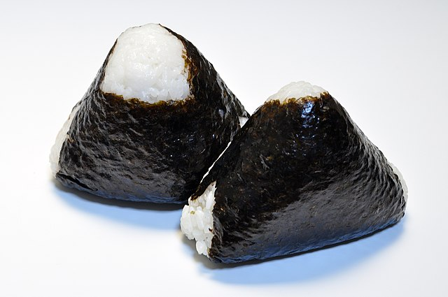

Home
Onigiri
Makes 9 onigiri

Onigiri are Japaneses rice balls. They are very popular throughout Japan with hundreds if not thousands of variations. They can be filled with anything you can think of, grilled, topped rolled in furikake, and so on. This recipe will be for plain onigiri.
Ingredients
- 3 rice cooker cups of rice
- Water
- 3 sheets of nori cut into strips
- Kosher salt
Optional tools
- Onigiri molds
- Rice cooker
Directions
- Rinse the rice until the water runs clear.
- Cook the rice according to your rice cooker's instructions.
- Soak your onigiri mold in water to prevent the rice from sticking. Next sprinkle salt onto the mold to season the rice.
- Fill your mold with rice, making sure to get rice into the corners.
- Press the lid onto the mold firmly and then unmold the onigiri.
- Wrap nori around the onigiri.
This can also be made without a mold by shaping the rice into a triangular shape with your hands.